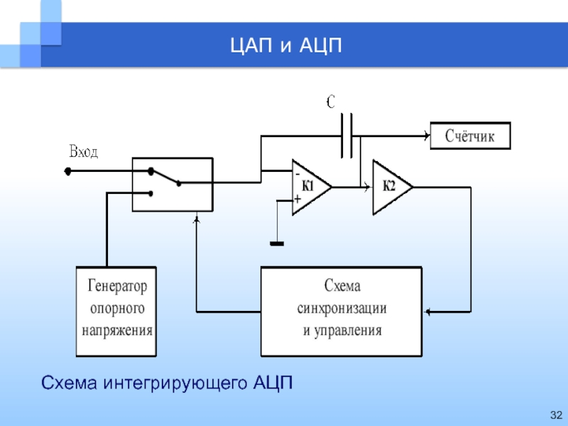
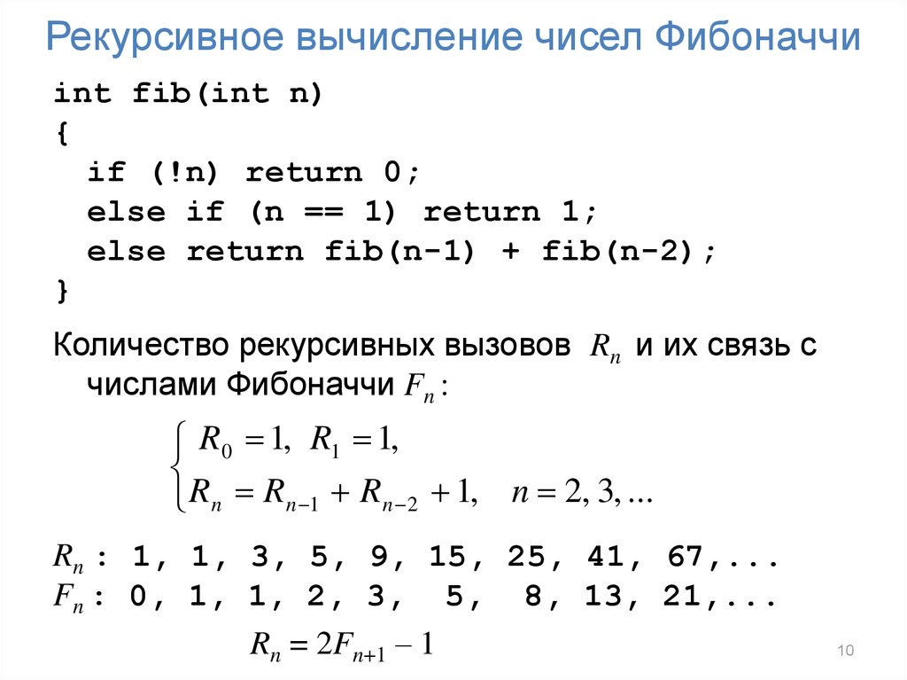
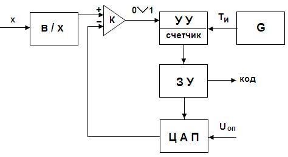
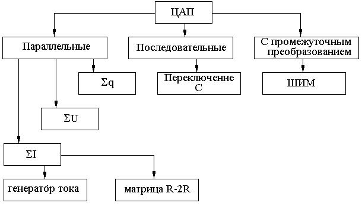

Цап и Ацп
ЦАП служат для преобразования информации из цифровой формы в аналоговый сигнал. ЦАП широко применяется в различных устройствах автоматики для связи контроллеров, вырабатывающих сигналы управления в виде цифрового кода, с аналоговыми элементами системы.
Принцип работы ЦАП состоит в суммировании аналоговых сигналов, пропорциональных весам разрядов входного цифрового кода, с коэффициентами, равными нулю или единице в зависимости от значения соответствующего разряда кода.
ЦАП преобразует цифровой двоичный код а0, а1, а2, .. ап-1 в аналоговую величину, обычно напряжение Uвых.. Каждый разряд двоичного кода имеет определенный вес i-го разряда вдвое больше, чем вес (i-1)-го.
Работу ЦАП можно описать следующей формулой:
где e = - напряжение, соответствующее весу младшего разряда, аi - значение i -го разряда двоичного кода (0 или 1).
Например, числу 1001 соответствует: Uвых=e*(0*1+0*2+1*4+1*8)=12*e.
Точность преобразования: ,и для .
Выбором е можно установить требуемый масштаб аналоговой величины.
Существуют различные типы АЦП. Мы остановимся лишь на тех типах, которые получили в настоящее время наибольшее распространение.Здесь входная аналоговая величина Uвх с выхода схемы ВХ сравнивается с помощью 2n+1 – 1 компараторов с 2(2n-1) эталонными уровнями, образованными делителем из резисторов равного сопротивления. На вход делителя подается стабилизированное опорное напряжение Uоп. При этом срабатывают те (m) младших компараторов, на входе которых уровень сигнала выше эталонного уровня. На выходах этих компараторов образуется единичный код, на выходе остальных (n-m) нулевой код. Код с выхода компараторов затем с помощью специального кодера-дешифратора преобразуется в двоично-кодированный выходной сигнал.
Погрешность АЦПП определяется неточностью и нестабильностью эталонного напряжения, резистивного делителя и погрешностями компараторов. Значительную роль могут играть входные токи компараторов, если делитель недостаточно низкоомный. Основной недостаток требуется набор прецизионных сопротивлений.
АЦП последовательного приближения является наиболее распространенным. Существует много различных вариантов схемы такого АЦП. Структурная схема АЦППП со счетчиком приведена на рисунке 52. Схема работает следующим образом. Входной аналоговый сигнал Х перед началом преобразования запоминается схемой выборки – хранения (В/Х), что необходимо, так как в процессе преобразования необходимо фиксировать значение аналогового сигнала. Сигнал с выхода схемы выборки – хранения подается на один из входов компаратора, на второй вход которого подается сигнал с выхода ЦАП. Состояние ЦАП определяется кодом, хранящимся в запоминающем устройстве (ЗУ), а этот код соответствует в свою очередь состоянию счетчика, входящего в состав устройства управления (УУ).

Числа Фибоначчи — это ряд, состоящий из целых чисел. Их особенность заключается в том, что каждый элемент представляет собой сумму двух предыдущих чисел. Последовательность Фибоначчи начинается с 0 и 1. Продолжить ряд легко: 0, 1, 1, 2, 3, 5, 8, 13, 21, 34, 55, 89, 144 и так до бесконечности. Математик обратил внимание на числовую последовательность, когда думал о разведении кроликов. Задача была поставлена следующим образом: «Если новорожденную пару кроликов, самца и самку, поместить в поле, то сколько пар кроликов будет через год?». Но как известно, ни одну практическую задачу невозможно решить без некоторых ограничений и предположений. Поэтому, к условию задачи добавились следующие допущения:

Схема работает следующим образом. Входной аналоговый сигнал Х перед началом преобразования запоминается схемой выборки – хранения (В/Х), что необходимо, так как в процессе преобразования необходимо фиксировать значение аналогового сигнала. Сигнал с выхода схемы выборки – хранения подается на один из входов компаратора, на второй вход которого подается сигнал с выхода ЦАП. Состояние ЦАП определяется кодом, хранящимся в запоминающем устройстве (ЗУ), а этот код соответствует в свою очередь состоянию счетчика, входящего в состав устройства управления (УУ).

При построении ЦАП могут быть использованы различные принципы. На рис.11.4. приведена классификация наиболее распространенных из них. Напомним, что в качестве выходного параметра ЦАП рассматривается напряжение. В параллельных ЦАП преобразование всех разрядов исходного кода происходит одновременно. При этом используются принципы суммирования зарядов (q), напряжений (U) или токов (I), пропорциональных значениям разрядных коэффициентов этого кода. В последовательных ЦАП преобразование исходного кода выполняется последовательно разряд за разрядом. В ЦАП с промежуточным преобразованием для получения выходного сигнала используется некоторая вспомогательная переменная (физическая величина), полученная из исходного кода. Рассмотрим более подробно реализацию некоторых из приведенных принципов.

рис 11.4